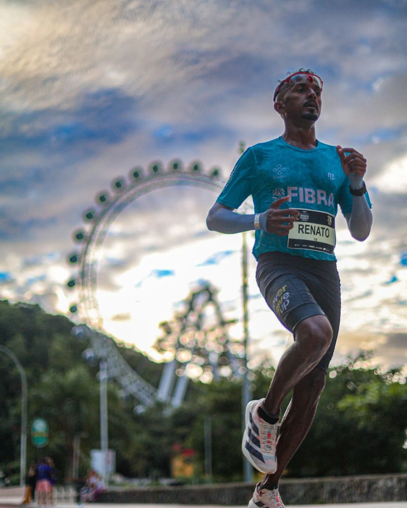
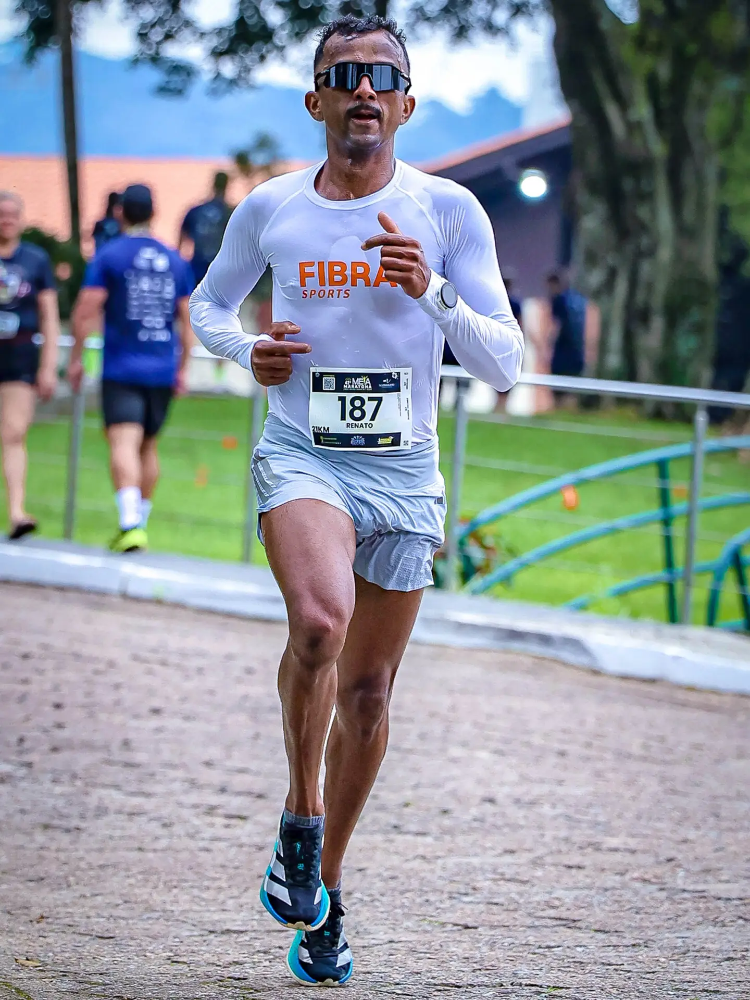
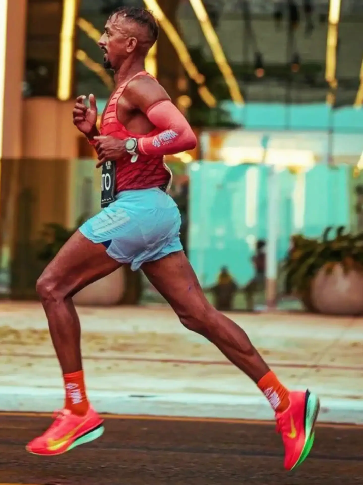
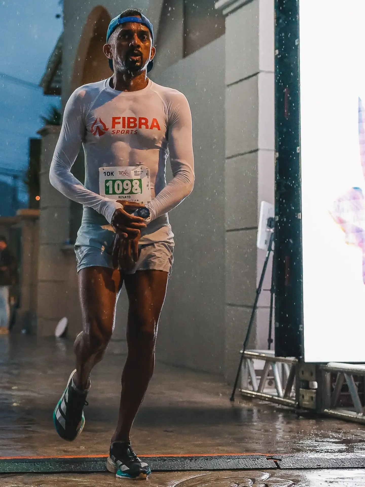
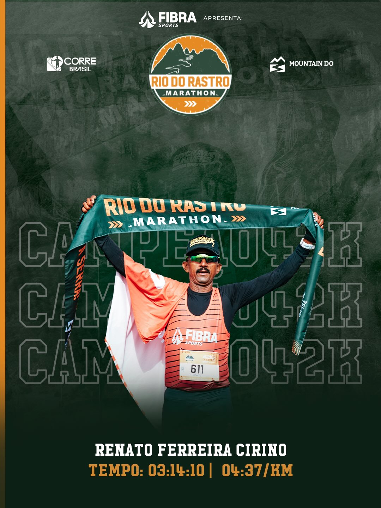
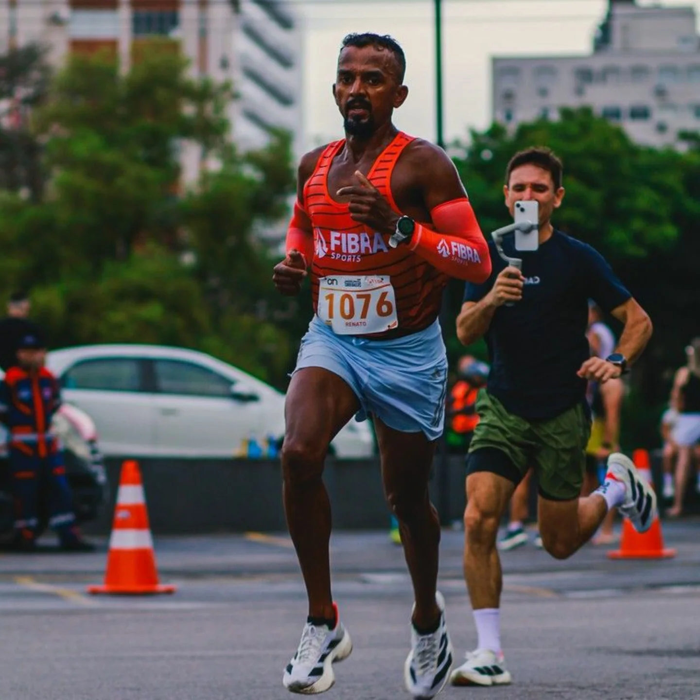
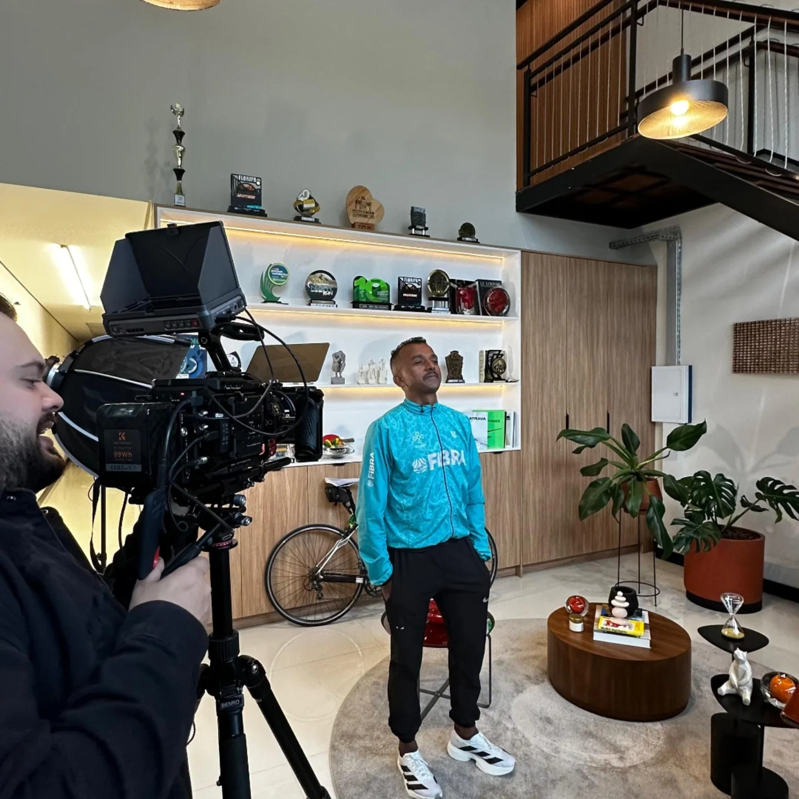

CAMPEÃO · 42 KM
Rio do Rastro
Marathon
Dois títulos na serra catarinense.
2025 / 2026↗
MARATONISTA · ITAPEMA / SC
Da estrada à serra.
Uma trajetória construída a cada quilômetro.

01 / O ATLETA
Renato Ferreira Cirino é maratonista de Itapema, em Santa Catarina. Sua trajetória reúne resultados em corridas de rua e nos 42 quilômetros da Rio do Rastro Marathon.
Bicampeão da Rio do Rastro e atleta patrocinado pela Fibra Sports, Renato leva o nome de Itapema às estradas e aos pódios.
Explore os resultados ↓02 / CONQUISTAS
Alguns dos destaques
da trajetória de Renato.
CAMPEÃO · 42 KM
Dois títulos na serra catarinense.
CAMPEÃO · 10 KM
33min57s
VICE-CAMPEÃO · 21 KM
1h10min27s
03 / RESULTADOS
Resultados selecionados. Os tempos abaixo correspondem a estas provas.
42 km
10 km
21 km
42 km
21 km
42 km
15 km
7 resultados
04 / GALERIA
Corrida, conquistas e bastidores.






05 / PARCEIROS
Parcerias que fazem parte da trajetória.
Parceiro de Renato Cirino
06 / CONTATO
Para parcerias, convites e contato com Renato.
Converse pelo Instagram ↗